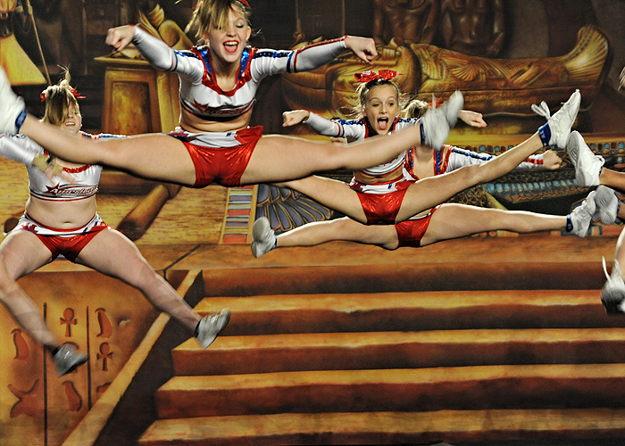
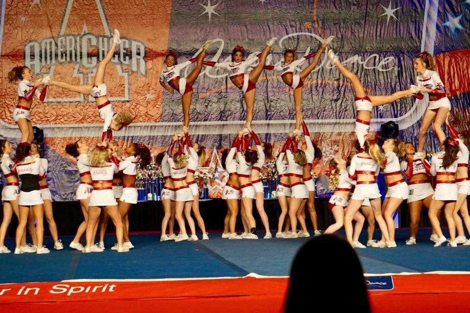

Skill Categories incoporporated into routines
Tumbling


Tumbling is a vital element of cheerleading. Above you see a cheerleader performing a round off, arabian, backhandspring, full. This for example, is a level 5 skill that would be competed in the running tumbling section of a routine.
Stunts

Stunts are the most important aspect of a cheer routine. There are 4 positions: Main Base (controls the flyers foot), Side Base (supports flyers foot and main base) Backspot (supports from behind the stunt) and Flyer (does skills in the air). Stunts have the most weight on a team's score and one mishap in a stunt can really hurt a team's overall score.

Since these hold the overall weight of a routine, teams work extremely hard to perfect tough skills to raise their score and also to ensure that if there may be a mishap, their difficulty can compensate for it. The stunts above are a switch up (flyer switches feet when being thrown in the air) and a double up (flyer spins twice in a bases hand before facing the front again).
Basket Tosses

Basket Tosses get their name from the way in which the bases(throwers) hands are interwoven together like a basket. In a cheer routine, there is a dedicated section to basket tosses, however, specialty basket tosses are used throughout the routine in various places. The particular basket toss in the image above is a "hitch, kick double down" and is a typical basket used in a level 5 routine.
Jumps
Jumps are dreaded by most cheerleaders because the execution of getting the perfect timing can take two to three full practices all together. The jump pictured above is a toe touch and usually in cheer routines that are level three and higher, there is a jump sequence section where 3 or 4 jumps are connected together and then a tumbling skill is connected at the end of the sequence.
Pyramid
Pyramid is usually at the end of the routine and is when everyone on the team comes together to create a very large stunt structure and to do skills where everyone is connected. This is part of a routine where teams can show off amazing connectedness and athleticism. There are many explosive elements in pyramids and some of the best teams have extravagent, fast flowing and ambitious pyramids.